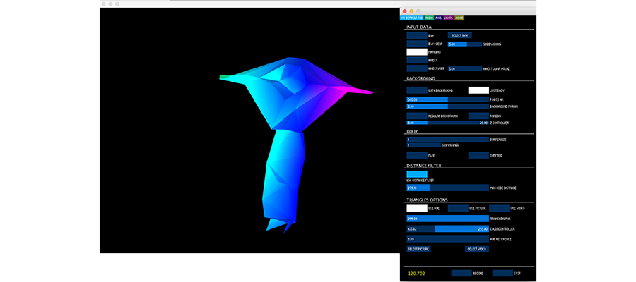
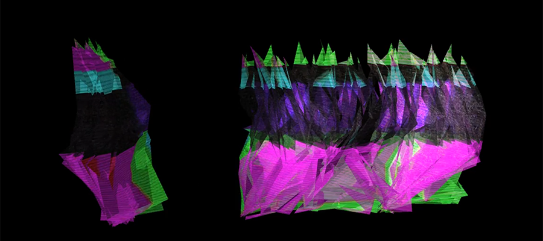
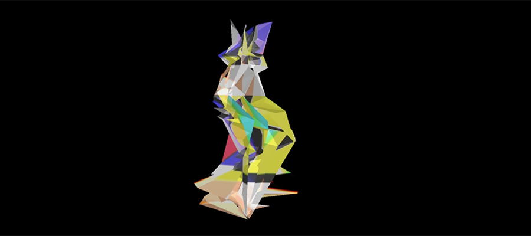
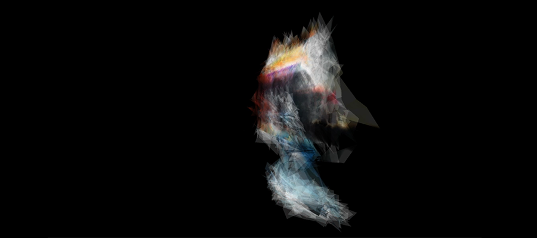

Movement Aesthetic Visualisation Tool.
Movement Aesthetic Visualisation Tool (MAVi) is a tool designed and developed to explore the possibilities of use of movement data for video making and live performance. It was developed during an internship at the School of Interactive Arts and Technology of Simon Fraser University Surrey in Canada between May and June 2015. The tool was presented as a work-in-progress on International Symposium on Electronic Art (ISEA) in Hong Kong in May 2016. Also, a video piece Internal developed using this tool was presented in the same conference as an artist talk.
MAVi takes as input the body points, and creates triangulations between neighbour points. It allows to apply textures (colours, pictures and videos) to the created triangles and modify their positions in three-dimensional space. It can be used not just for movement data visualisation, but also for real-time manipulation and recording. Every frame can be saved and used for the creation of animated sequences.
The possibility of work with real-time Kinect data makes it suitable not just for video dance but also live performance and artistic installations.
MAVi is a software tool that allows three-dimensional data visualisation, animation and creative interpretation. We developed it to explore the artistic potential of the motion capture data. It allows applying effects like automatic camera movements, light settings manipulation, data noise and colour, photo and video texturization. Our tool works with technologies like optical motion capture systems and real-time movement sensor Kinect to generate video shots that can be further combined to create video dance pieces.
Version 1.0 of the tool implements the following modules:
The videos of some MAVi functionalities can be consulted here: